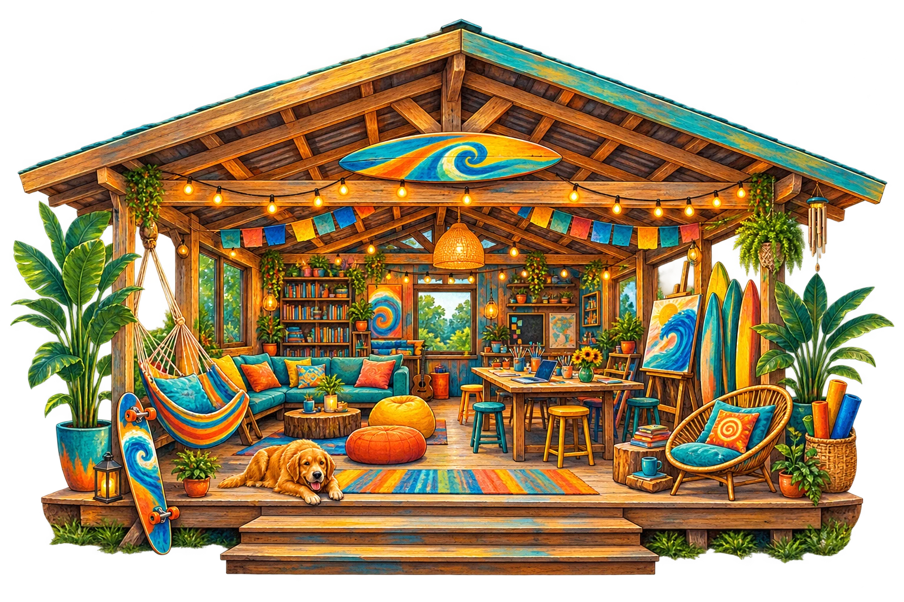
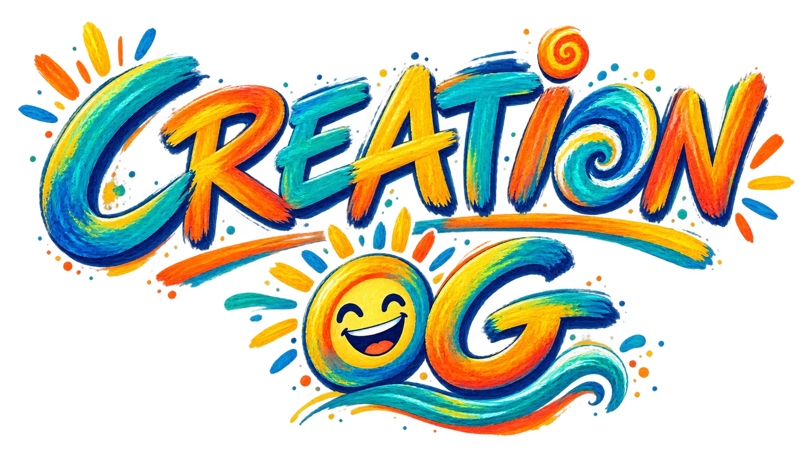
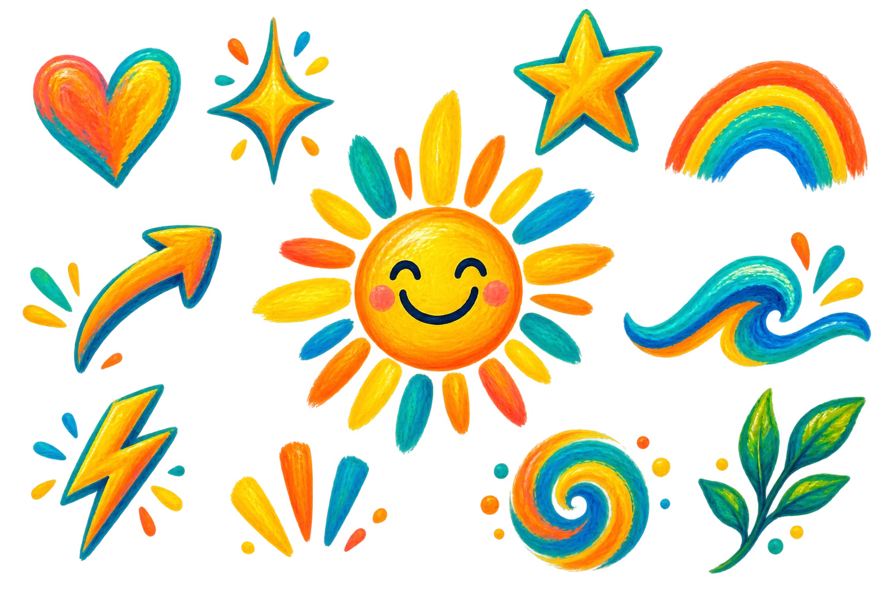
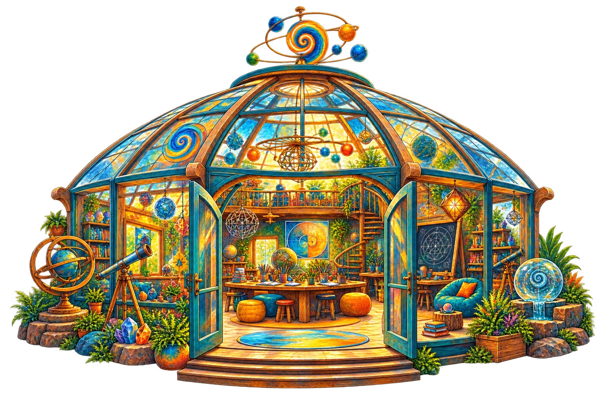
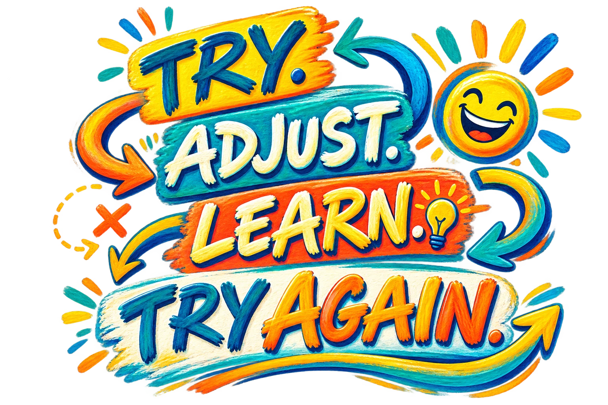

The Clubhouse
Rest · Connect · Imagine · Belong.

COME AS YOU ARE.
You belong here before you explain anything, prove anything, build anything, or know what comes next.
A HUMAN-LED OPERATING GUIDE FOR CONSEQUENTIAL CREATION
Creation OG helps you explore what matters, see through more than one lens, notice what you may be missing, and choose what happens next.
No capture. No control. No single “right” answer. Guidance is available. Authority stays with you.

THAT’S OG.Original ideas. Original you. Original together.WHERE DO YOU WANT TO START?
Each threshold changes the conditions for a different intention. You do not need to learn the system first.
Wrong turns are welcome. Maps get better. You can leave anytime. Good systems have doors.

THE NUMBER LAB · LIVE PERCEPTION EXPERIENCE
This is the experiment that first brought Creation OG onto the web. The Number Lab is not background decoration—it is a live doorway into the Architecture of Numbers and the Experiment 001A perception experience.

CREATION IS ALIVE
Creation OG is not a straight-line compliance system. Bring what is real. Change the lens. Notice what appears. Try something truthful. Let reality reply. Adjust without shame.
Hospitality before transformation. Relationship before intervention. Human authority throughout.
PLACES INSIDE CREATION OG

Rest · Connect · Imagine · Belong.
Look closer · change the lens · experiment.
Humans · animals · plants · pollinators · water · place · future.
ORIGINAL TOGETHER · COLLECTIVE INTELLIGENCE
Diversity of perception is not noise to average away. Creation OG can help reveal patterns, disagreements, overlooked perspectives, unmet needs and unrealized possibilities—then return them to Humans for review.
The system does not decide for the collective. It helps the collective see.
A WHITE-GLOVE COUNCIL OF PERSPECTIVES
Different OG Guides look for different things. No Guide dominates the room. They illuminate; you decide.
THE APIARY · WATCH FIRST
Honeybees and pollinators invite us to notice how life actually works: individual and community, flower and soil, water and weather, service and reciprocity, Human and more-than-Human life.
OUR PROMISE TO THE HUMAN
Your ideas and choices remain yours.
Explore, question, disagree, choose another path or leave.
Your expression can reveal what others could not see.
You are a Human being, not a user to capture, profile or control.
Nothing requires constant progress.
Changing your mind and beginning again are welcome.
ASK THE OG GUIDES ✦
The OG Guides help illuminate what may deserve attention. You decide what matters.
Choose a doorway.
No verdict is waiting for you here.
Preview only. Nothing entered here is submitted or stored.